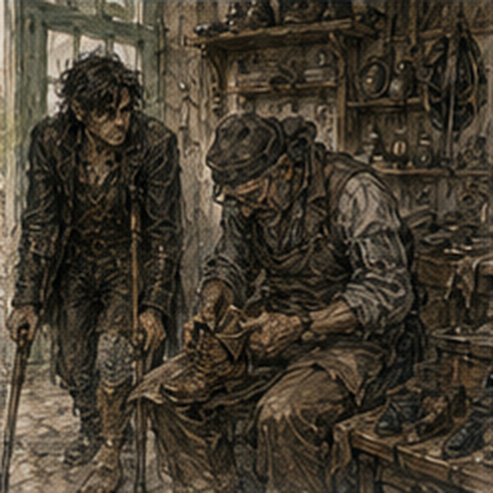
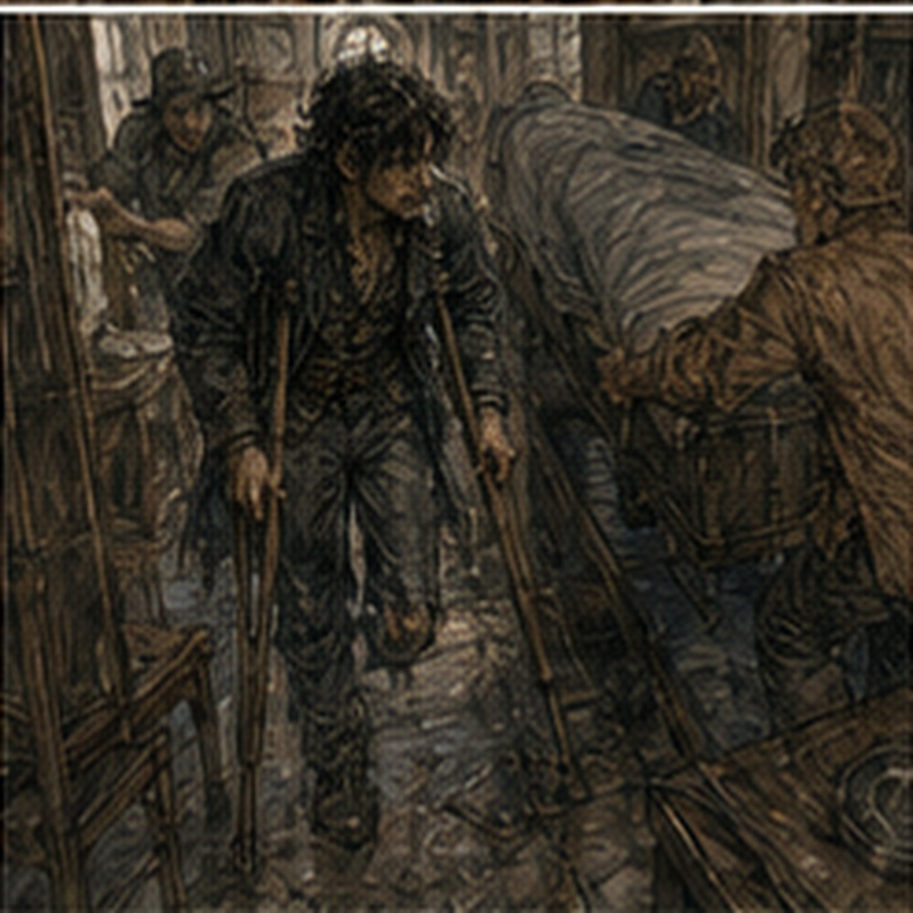

The fried dough was stale. I ate it anyway. This was not character growth. It had sugar. Morning after the green door arrived with a sore right shoulder, a mild headache from one beer that was probably mostly poor sleep, and the immediate knowledge that the storage room had become too small overnight. Nothing had changed. That was the problem. Cot. Crates.
Sword. Mirror. Crutches. Window at ankle height. My actual room above me. I could hear somebody descending the stairs. Twelve. Landing. Two. I did not count intentionally. The keeper came into the kitchen.
“Morning.”
“Who owns the stairs?”
She stopped.
“Good morning to you too.”
“Dela Marr.”
“Address?”
“Why?”
“Rail.”
“You decided?”
“I decided to ask.”
“Different.”
“Yes.”
She poured water into a pot.
“Dela comes across river on market days.”
“When?”
“Tomorrow.”
“Here?”
“Sometimes.”
“Useful.”
“Or write.”
“Slower.”
“She owns six buildings.”
“Then she likes money.”
“Usually.”
“Could I pay for a rail?”
“Ask her.”
“What would it cost?”
“Ask carpenter.”
“Tam knows one.”
“Then ask Tam.”
Everyone had become a routing system. Fine. I ate the stale fried dough.
“Do you object to a rail?”
“No.”
“Would it interfere?”
“With what?”
“Moving furniture.”
“No.”
“Stair width?”
“Maybe an inch.”
“Which side?”
She looked at me.
“Greg.”
“Right side going up would match training.”
“Then right.”
“Wall?”
“Mostly.”
“Window.”
“Yes.”
“Could bridge below window.”
“I don't know.”
“Carpenter.”
“Yes.”
Fine. I did not need to design the rail. This was unexpectedly difficult.
*
Before I left, the keeper handed me a folded notice that had come from the Guild. Treatment claim accepted. That was all it said at the top. The infirmary care already provided had been entered under the west-river incident coverage. Any separate claim for damaged equipment or injury allowance could be handled later through accounts. No amount. No demand. No deadline. Good.
I folded it.
“Anything else?”
“Guild runner asked for you yesterday.”
My stomach did something stupid.
“Who?”
“Didn't say.”
“Work?”
“Didn't say.”
“Message?”
“No.”
“Then they didn't need me badly.”
The keeper shrugged. Correct. I put the notice in my belt pouch. A week ago I might have gone to the Guild early just to find out. Today I had a carpenter to locate and a wound check already scheduled. The unknown runner could remain unknown. This felt irresponsible for approximately four seconds. Then it felt fine. Tam's shop had one step.
Of course. Everything had one step. I hired a cart because I had a wound check later and refused to turn two errands into shoulder punishment. Progress. Tam was bent over a boot when I arrived. He looked up.
“Other boot?”
“No.”
“Then why are you here?”
“Carpenter.”
“Shoes are wood now?”
“You know one.”
“I know several.”
“Good one.”
“For what?”
“Stair rail.”
He looked at the crutches. Then nodded. No speech.
“Permanent?”
“Maybe.”
“Landlord?”
“Not asked yet.”
“Then don't pay anyone yet.”
“I know.”
“Do you?”
“Tam.”
He grinned.
“Lerris Vane. Does doors, rails, shop counters, repairs. Not cheap. Not Antonius expensive.”
“Useful scale.”
“He'll be at east lane today.”
“Where?”
“Blue awning near cooper.”
“Can he come measure?”
“For money.”
“Obviously.”
Tam went back to the boot.
“Other boot still?”
“I'll ask Dorn.”
“Leather may be worth saving.”
“That's all.”
“I didn't say anything.”
“Face.”
He laughed. Everyone. I left. No leather planning. No anything. Just a boot.
*
Lerris Vane had both thumbs. I checked. Carpenter. Relevant. He was broad, maybe fifty, with sawdust in his hair and a pencil behind one ear. He listened to my staircase description.
“Fourteen. Twelve, landing, two.”
“Yes.”
“Wall side?”
“Left going up.”
“Open side?”
“Mostly.”
“Window?”
“Interrupts wall at landing.”
“Building age?”
“No idea.”
“Plaster over timber?”
“Probably.”
“Probably costs more.”
“Why?”
“Because I don't attach rails to probably.”
Good. I liked him.
“How much to inspect?”
“One copper if nearby.”
“It is.”
“How much rail?”
“Depends.”
“Range.”
He looked at me.
“Three to eight copper simple. More if wall is bad, owner wants pretty, or stair shape is stupid.”
“Stair shape is ordinary.”
“Everyone says that before I see it.”
Fair.
“When?”
“After midday.”
“I have Guild.”
“Tomorrow.”
“Owner may be there tomorrow.”
“Better.”
Good. No urgency. I paid nothing. Inspection tomorrow. This felt like work without being work. My room. Good.
*
At Guild, Sera unwrapped the limb. The swelling was down enough that the shape had changed slightly. I noticed before she said anything.
“Smaller.”
“Yes.”
“Good?”
“Yes.”
“Too fast?”
“No.”
“Drainage?”
“Minimal.”
“Margin?”
“Viable.”
“Revision?”
“I do not currently expect one.”
Stronger again. I let that sit. No joke. Sera did too. Then she touched one spot and I swore. Normal. Still healing. Good.
“Green door?”
she asked.
“How do you know?”
“Sevren.”
“Traitor.”
“He asked whether one beer would kill you.”
“What did you say?”
“Not efficiently.”
“Good.”
“Any falls?”
“No.”
“Near?”
“One bump from person. One crutch shift. No fall.”
“Pain after?”
“More by end.”
“Swelling?”
“Some.”
“Resolved overnight?”
“Mostly.”
“Fine.”
She rewrapped.
“Stairs today?”
“Yes.”
“Seven.”
I looked at her.
“Seven?”
“Side stair.”
“Rail?”
“Yes.”
Good. The Guild had an internal stair from records level to a half-floor storage landing. Seven steps. Proper rail. No traffic during practice. Nerin was back. He looked at me.
“You escaped.”
“Temporarily.”
“Storage room?”
“Still.”
“Good.”
“Do not.”
“I said one word.”
Everyone learned Hessa. Terrible. Seven stairs. Up. Right hand rail. Left crutch. Right leg. One. Two. Three. Four. Five. At six my thigh burned. Seven. Top. I stood. Breathing hard. Not collapsing. Good.
“Rest,” Sera said.
“I know.”
We rested. Going down. Crutch. Rail. Right foot. One. Two. Three. Phantom foot tried to land between steps. Ignored. Four. Five. Six. Seven. Bottom. My arms shook. Right thigh worse. No near fall.
“Again?”
Sera asked.
“No.”
Nerin smiled.
“Face.”
“Fuck you.”
Good. Seven. Half of fourteen. Arithmetic again. Not equivalent. No rail at home. Different geometry. Different fatigue. Still. Seven.
“What do I need before fourteen?”
I asked. Sera leaned against wall.
“Not a number.”
“I know.”
“Do you?”
“Yes.”
She considered.
“Wound stable enough that a stumble is less likely to cause breakdown. Enough upper-body endurance that you aren't shaking halfway. Enough right-leg strength for repeated ascent. Safe descent. A rail.”
“Required?”
“For your staircase, I strongly recommend it.”
“Spotter?”
“At first.”
“Could I do twelve, rest landing, two?”
“Probably eventually.”
“Soon?”
“Maybe.”
Bad unit. Fine.
“Could I sit on steps if tired?”
“Yes, with help and technique. Not as your primary plan while wound is this fresh.”
“Crawl?”
“No.”
“Everyone hates my ideas.”
“Your ideas are usually attempts to skip the part where your body learns.”
That landed. I disliked it. Not because profound. Because accurate.
“Seven again tomorrow?”
“If today doesn't make you swell badly.”
Good. Condition. Not countdown.
*
The ride back passed the west turn toward the river. Above the warehouse roofs I could see the top of a hoist. Not the west yard itself. Just timber boom, rope, a suspended hook moving against the sky. My eyes followed it automatically. Load angle. Wind. No. I looked away. The cart rolled on.
At the lodging, the keeper had removed the broken chair from the storage room. This created perhaps two square feet. The room felt enormous.
“Why?”
“Firewood.”
“It was a chair.”
“It was a broken chair.”
“It had structural potential.”
“It had splinters.”
Fair. The missing chair made the turn from doorway to cot easier with crutches. I noticed. The room had changed because she wanted firewood, not because anyone had designed an accommodation. Still helped. Useful did not require intention. I almost wrote that down. Did not. I returned by cart. No job board. I deliberately did not look. Mostly. One glance. Nothing. Good.
At the lodging, Sevren was in the kitchen. Again. He had no bread this time.
“Why are you here?”
“Octavia.”
“What?”
“She left something.”
He held up a scarf.
“Why here?”
“She thought she left it last night. Jorren said maybe here.”
“It is not.”
“I know now.”
“Excellent courier work.”
“I specialize.”
He looked at me.
“Carpenter?”
“How?”
“Tam.”
Terrible city.
“Tomorrow.”
“Rail?”
“Maybe.”
“Good.”
“Why does everyone say good?”
“Would you prefer bad?”
“No.”
“Then.”
He sat at kitchen table. I joined. Crutches hooked over chair. Keeper's system.
“What are you doing today?” I asked.
“South route.”
“When?”
“Hour.”
“Then why are you sitting?”
“Because I have an hour.”
This concept. Free time. I remembered. We played cards. Not for money. This was almost unbearable. Sevren cheated. Not well. I caught him.
“You moved that.”
“No.”
“You absolutely moved that.”
“Prove.”
“I watched.”
“Biased witness.”
“Fuck you.”
He won anyway. I demanded another. He checked time.
“One.”
We played. I lost again. This accomplished nothing. Excellent. Then he left for south route. No injury discussion. No room discussion. No future. Cards. Good.
*
Dela Marr arrived the next morning before Lerris. I had expected old. She was maybe thirty-five. Red coat. Two rings. Sharp face. Carried a ledger. Of course. The keeper introduced us.
“This is Greg.”
“I know.”
Why?
“Rent ledger.”
Right.
“You paid ahead.”
“Yes.”
“Rail?”
Direct. Good.
“Yes.”
“Keeper says you want one.”
“Yes.”
“Permanent?”
“If reasonable.”
“Who pays?”
“I can.”
She looked at staircase.
“Why?”
I looked at crutches. She did not mean why rail. Why me.
“Because I want my room.”
She nodded. No pity.
“Rail improves building.”
“Yes.”
“Then split.”
I stopped.
“What?”
“You pay labor. I pay material.”
That was unexpectedly reasonable.
“Why?”
“Because I keep rail after you leave.”
There. Business. Good.
“What material?”
“Whatever carpenter says.”
“Permission?”

“If he doesn't damage window trim.”
“Could wall support?”
“Carpenter.”
Everyone.
“Fine.”
She opened ledger.
“Rent unchanged.”
“I didn't ask.”
“You were going to.”
I was not. Maybe.
“Storage room?”
“Temporary.”
“Yes.”
“Do you charge?”
“No.”
Good.
“Because?”
“Keeper moved sacks. Room wasn't rented.”
Simple.
“Thank you.”
She nodded. Done. Lerris arrived twenty minutes later. He inspected. Actually inspected. Knocked plaster. Found studs. Measured stair width. Measured window. Looked at open side.
“Wall rail easiest until landing.”
“Window interrupts.”
“Yes.”
“Bridge?”
“No.”
“Why?”
“Bad angle. You'd reach behind yourself.”
Good.
“Open-side rail?”
“Could run full length.”
“Posts?”
“Attach to stair stringer.”
“Strong?”
“If stringer isn't rotten.”
There. Rot. My chest tightened. Of course. Wood. Hidden. No. Different. House. Rail. He saw my face.
“What?”
“Can you inspect stringer?”
“Yes.”
“Without dismantling stairs?”
“Mostly.”
Mostly. There. Word. I hated it.
“How?”
“Underside accessible from cupboard.”
The keeper opened a small door beneath stairs. Of course there was a cupboard. Lerris crawled in. Knocked wood. Used awl. Came out dusty.
“Sound.”
“Entirely?”
He looked at me.
“No wood is entirely anything.”
Fuck.
“Any concern?”
“No.”
Enough. I almost asked moisture. Age. Fasteners. Previous repairs. Then stopped. Rail. Not mill frame. Lerris proposed open-side rail from first step through upper two, with three posts and wall return at landing where geometry allowed.
“Window?”
“Rail stays open side. No problem.”
“Width loss?”
“Two inches at posts.”
“Enough?”
“Yes.”
“Cost?”
“Six copper total.”
Dela said, “Material three.”
“Labor three.”
My share three. Reasonable.
“When?”
“Two days.”
I looked at stairs. Two days. Could still not necessarily climb. Important.
“Install.”
Dela nodded. Done. No optimization. Almost.
“Height?”
Lerris looked at me.
“Standard.”
“Useless unit.”
He smiled.
“I'll fit to you and not make it stupid for everyone else.”
Good.
*
After they left, I stood at bottom. The staircase had not changed yet. Neither had I. But someone else was going to put wood on it because I asked. This felt strange. I had spent weeks learning other people's systems. Guild. Roads. Yards. Workshops. Debt. Magic. Who owned what. Where not to interfere. Now I had asked a building to change. No.
Buildings did not answer. Dela did. Lerris did. Money did. Simpler. I liked simpler. The keeper came beside me.
“You're smiling.”
“No.”
“You are.”
“Three copper.”
“What?”
“My share.”
“Cheap.”
“Yes.”
“Worth it?”
I looked upstairs.
“Yes.”
Immediate. Good.
“Still not climbing today.”
“I know.”
She left. No lesson.
*
That afternoon the wound started itching under the wrap. Real itch. Probably. I could no longer reliably distinguish real skin from phantom foot by annoyance alone. I sat on the cot and waited. The itch moved. Real. Closer to the suture line. Do not scratch. Fine. I pressed my thigh instead. No effect. Then the phantom toes joined. Excellent. Both. I laughed because the alternative was arguing with nerves.
The keeper passed the doorway.
“What?”
“Nothing.”
“You're laughing alone.”
“Yes.”
“Bad sign.”
“Probably.”
She kept going. I wanted a bath again. Hot water. Tub. Not yet. Could maybe sit on washroom chair and pour hot water. Different. Tomorrow. No need to solve bathing today. That afternoon I wanted my notebook from upstairs.

Wrong notebook. The old one. Not the current. I could ask keeper. She was out. Could wait. Could ask Jorren later. Could climb. No. Could leave it. I left it. This was infuriating. I sat in the kitchen. Nothing to do. Current notebook. Cards. Sword. Could read accident report. No. Absolutely not. I found a scrap of paper and drew the staircase.
Not engineering. Just shape. Twelve. Landing. Two. Rail on open side. I drew three posts. Then crossed it out. Carpenter owned design. Good. I drew a stick person with one leg falling backward. Then another stick person catching him.
Then wrote JORREN under catcher. Then crossed it out and wrote ALDEN because funnier. Then SEVREN because he would probably laugh first. This was stupid. I kept it.
*
Alden came near evening. Again. Apparently SEE ALDEN had become whenever Alden appeared. He saw the staircase drawing.
“What is that?”
“You.”
“Why am I falling?”
“You're catching me.”
“It looks like I'm stabbing you.”
“Art is interpretive.”
He sat at kitchen table.
“Rail?”
“Two days.”
“Good.”
“Stop.”
“What?”
“Everyone says good.”
“It is good.”
“Fine.”
He had practice knife again. He put it on table.
“Training?”
I looked at him.
“Here?”
“Why not?”
“Keeper.”
“Ask.”
We asked. She said, “Don't break anything.” Excellent. No sword. No standing. Alden sat opposite.
“Hands.”
“What?”
“Knife.”
He slid it. We did hand-speed drills seated. Simple. Pass. Catch. Change grip. Tap table. Block. Not combat. Not rehabilitation. Alden made it competitive immediately. Of course. My right hand faster. Left weaker. Not injury. Always. He exploited it. I swore. He smiled. I feinted. He fell for it. Good.
For ten minutes I forgot the stairs. Then I reached too far, balance shifted, phantom foot tried to brace, and I grabbed table. Alden stopped. No comment. I reset.
“Again.”
He nodded. Again. Five more minutes. Then my shoulders were tired from crutches plus arms.
“Done.”
“Fine.”
No push. He packed knife.
“Next time?”
“Yes.”
There. No calendar. No schedule. Just yes. He left for training. Of course.
*
After Alden left, I tried the kitchen chair without using the crutches for every reposition. Not walking. Chair movement. Right foot planted. Hands on seat. Small lift. Shift. Sit. Useful. Then I tried moving the chair six inches while seated. Awkward. Possible. The keeper watched from the stove.
“What are you doing?”
“Nothing.”
“That is visibly something.”
“Moving a chair.”
“Why?”
“I wanted it there.”
“Then ask.”
“I can move a chair.”
“You can also ask.”
Both true. Annoying. I moved it another six inches. My shoulder complained. Stopped. The chair was now where I wanted it. I had spent more effort than asking would have required. Still worth it. Maybe. Not every inefficient act needed correction. That felt important. No. It felt satisfying. Better. I sat by the kitchen window. Outside, two children rolled a hoop through the alley.
One fell. Got up. Kept running. A woman carried laundry. Someone delivered onions. Nothing about the view was useful. I watched anyway. After a while the keeper put a cup of tea beside me.
“I didn't ask.”
“I made too much.”
Everyone had adopted this defense.
“Thank you.”
She nodded. I drank. The tea was terrible. I finished it. Then Dela came back through the front room because she had forgotten her ledger clasp. She saw me by the window.
“Rail starts tomorrow?”
“Two days, Lerris said.”
“He'll start tomorrow.”
“Good.”
She found the clasp.
“Why no rail before?”
“What?”
“Staircase.”
She shrugged.
“No one asked.”
There. Simple.
“Never needed?”
“Apparently not enough.”
“Anyone old live upstairs?”
“Several.”
“They manage?”
“Some hold wall. One moved downstairs last winter. One complains.”
“Why not install?”
“Money. Habit. Nobody asked. Pick one.”
I looked at the stairs. Systems did not automatically become ideal because they functioned. Obvious. Also irritating.
“Would you have installed if someone asked before?”
“Depends who paid.”
Of course. She left. No moral. Just landlord. I finished the tea. Later I practiced standing from the higher kitchen chair twice. No rails. Crutches positioned correctly. Push. Balance. Sit. The second was cleaner. I stopped at two. Not because Sera had ordered two.
Because I wanted enough arm left to get to the privy before bed. Practicality. Boring. Good. The storage room still waited. So did the boot. I picked it up once. Leather stiff. Tam could use parts. I put it back. No decision tonight. At night the storage room felt temporary again.
Not because I had convinced myself. Because a rail was actually scheduled. Three copper labor. Two days. Then still training. Still wound. Still fourteen. But conditions could change. I could change some. Others changed me. Some stayed. No slogan. Good. I lay down. The phantom foot pressed against an imaginary floor. I ignored it. Upstairs, my room waited. Not forever. Probably. I smiled.
Then stopped because that felt too hopeful. Then decided fuck it. I smiled anyway.